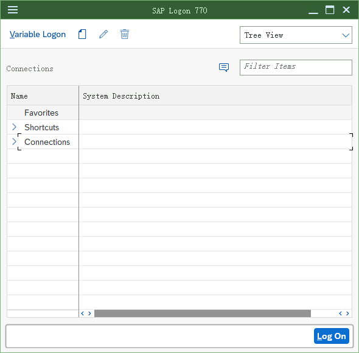
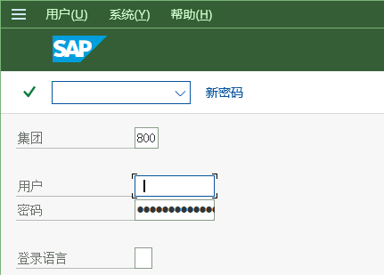
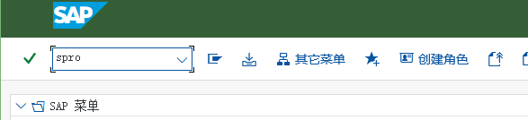

准备工作 — 登录系统与进入后台
准备工作 · 客户端登录 · SPRO 后台入口
2个任务
5张实机画面
5个手顺步骤
0/0后台 / 前台任务
1. 本模块导读
全站的第一步：把 SAP GUI 连上系统，并打开配置后台（SPRO）。后面 FI / CO / MM / PP / SD 五个模块的所有配置，都是在这个后台里按「IMG 路径」一层层点进去做的。
教材环境是一套中文界面的 S/4HANA（公司代码 C999、公司名 颐宁机械有限公司、工厂 F999、物料如 T999-100 / R999-100 / F999-100）。这些是原文档作者的系统取值，与你自己系统里的编号范围/组织结构不一定相同 —— 手顺的「操作顺序」可以照做，具体值请按自己系统填写。
本模块重点
- 客户端图标与登录页（系统/客户端/用户/口令/语言）
- SPRO 后台入口：事务代码
SPRO→ SAP 参考 IMG → 各模块菜单树 - 本站把「后台配置」与「前台操作」分开标注：后台 = IMG 定制，前台 = 日常业务事务
2. 任务目录（2 个）
其中 0 个任务给出了原文档中的 IMG 后台菜单路径；带 后台 标注的是定制（配置）任务，带 前台 标注的是日常业务操作任务；没有标注的任务原文未指明，请按任务名自行判断（一般「定义/维护…参数」＝后台，「创建/输入/显示…凭证、订单、发票」＝前台）。
3. 手顺（逐个任务）
怎么用这一页每个任务按原文档的顺序保留：先读「说明」，再照「IMG 路径」进入配置点，然后按编号步骤（每一步都配原文档的实机画面）逐屏操作。画面里的红色方框/箭头是原文档作者标注的「要填/要选的地方」。点击任意画面可放大（1×/2×/3×，ESC 关闭）。
任务 01
登陆系统
3 画面 / 3 步-
SAP Client 端的图标如下
双击 SAP Gui，弹出如下页面：
画面 1image2.png · 590×580 -
点击登陆，弹出如下页面：

画面 2image3.png · 431×309 教材笔记Gui 的配置如下 -
按上一屏继续操作（画面 3）

画面 3image4.png · 727×751
{kind=link}
{kind=link}
任务 02
进入后台
2 画面 / 2 步-

画面 4image5.png · 587×134 -
进入系统后，如下页面所示
在事务代码处输入 spro，进入后台配置页面
画面 5image6.png · 539×850
{kind=link}
4. 关于截图与取值
画面来自原教材文档本模块的截图全部来自
S4.docx 中作者在真实系统里截取的中文界面画面（原始文件名 imageNNN.png 保留在每张图的图注里，可与 Word 原文逐张对照）。本站没有对这些画面做任何重绘或模拟。取值请以自系统为准文档中的组织结构与主数据编号（公司代码
C999、公司名「颐宁机械有限公司」、工厂 F999、物料 R999-100/T999-100/F999-100、客户 K001/K002 等）都来自原作者的教材环境。照着手顺做时，操作顺序与配置点可以照搬，具体编号/名称请换成你自己系统里的值；遇到与文档不同的提示消息，先看「排错与踩坑」页里原文档记录的同类问题。